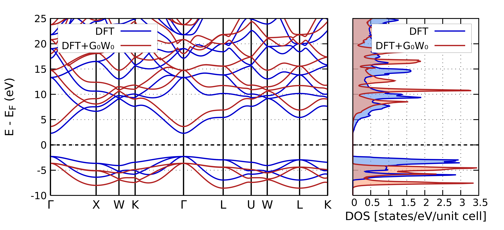
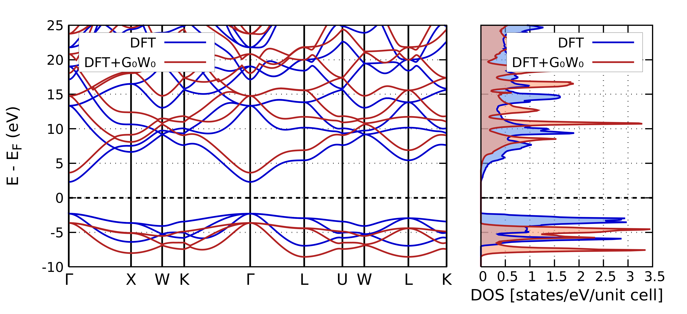
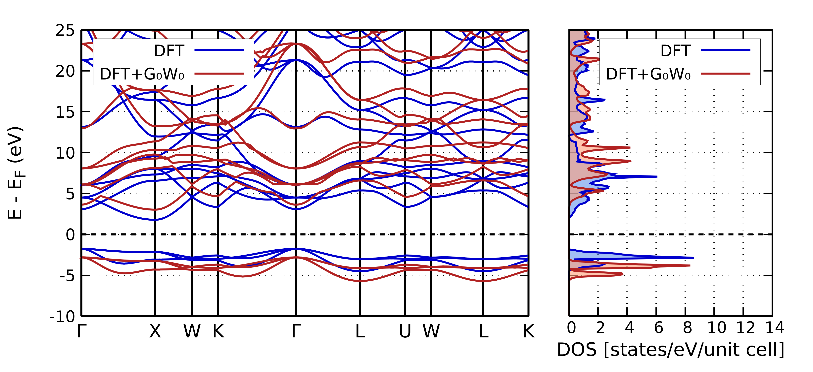

DFT: Teoría del Funcional de la Densidad
Pros:
- Costo computacional moderado.
- Excelente descripción del estado fundamental.
- Base de los métodos ab initio modernos.

Aprox. GW: correción de cuasipartículas
Pros:
- GW surge como la aproximación más baja de las ecuaciones de Hedin.
- Se corrigen las energías con la autoenergía Σ.
$$ E^{\mathrm{QP}} = E^{KS} + Z \left[ \mathrm{Re}\{\Sigma(E)\} - V^{\mathrm{xc}} \right] $$
- Corrige el gap electrónico por interacciones de muchos cuerpos.

Estructura Electrónica
LiF
 

MgO
CaO


ZnO